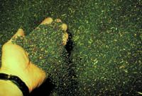
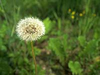

What are seeds?
A seed is really a miniature plant in a "dormant" developmental stage. Once fertilization has occurred in a flowering plant, a seed eventually forms. The seed is actually the result of the maturation of the ovule; it contains a sporophyte embryo plus stored food. The agricultural definition of a seed refers to the unit that is planted, regardless of its structure.
The ovary, and sometimes other floral parts, develop into a fruit. There are different types of fruit -- simple fruits develop from a single ovary, and may be fleshy, like peaches and apples, or dry, as in peas, beans or grains.
Seeds are composed of three basic structures:
- embryo - the young plant consisting of either one or two cotyledons; the pummule (new shoot); and the radicle (primary root). The pummule is further divided into the epicotyl (portion of stem above the attachment of the cotyledons) and the hypocotyl (portion of stem below the attachment of the cotyledons).
- endosperm - food (sugars, fats, proteins) storage area in monocots; the cotyledons store food in dicots
- seed coat - also called testa, the seed coat consists of one or more layers of protective tissue.
Seeds are a rich source of food as well as of fats and oils for industrial purposes. The reserves in cereals and legumes provide a large amount of the world's food supply. Seeds vary greatly in size, shape, form and nutritional content. Compare the faba bean seed to a flax seed; the size difference is obvious. Nutritionally, the faba bean provides much more protein than the flax seed but flax boasts a higher amount of B vitamins.
|

Seeds are dispersed in a variety of ways, via wind, water, animals and man. The success of angiosperms is due, in part, to the dispersal of seeds far from the parent plant. Tough seed coats enable seeds to lie dormant until conditions are favorable for germination and growth of the new plant. Different seeds require different conditions for germination. In some plants, cool, damp weather is necessary for germination, in others, the opposite is true.
What conditions affect seed germination?
Germination is the growth and development of a new plant from a seed and takes place in a series of steps. The fully developed embryo at the end of these steps is said to be a seedling. Not all seeds germinate, however, and the success of the start of the germination stage depends upon three main conditions; suitable moisture, temperature and oxygen. Other factors also influence the germination of seeds. These include the amount of light; dormancy of the seed; and, viability and longevity. Viability is the ability of the seed to germinate if conditions are right and longevity is the length of time a seed can remain dormant and still be viable.
Seeds require sufficient amounts of moisture in order to ensure the rupture of the seed coat. The seed absorbs water from its surroundings, the amount of which depends on the type of plant. Dry soils, and over-saturated soils and salty-soils may hamper the amount of water absorbed by the seed.
The temperature at which a seed will germinate is dependant upon the type of seed. Some crops and weeds germinate at lower temperatures than others, and thus get a jump start in the fields of Saskatchewan. Research has produced plant varieties which are earlier germinators and thus more suited to our growing season. Most crops require a temperature of about 15oC for germination.
The circulation of air around the seed is important in the process of germination. Compact soils hinder germination because of the lack of oxygen and can result in rotting of the seed.
What are the stages of growth of a plant? As stated, the first stage of a new plant begins at the seedling stage. Here, the new plant is undergoing differentiation of cells and tissues, that is, cells and tissues are developing to become part of stems, leaves, roots. While growth may seem slow, the seedling is very much active in growth of a different manner. The plant then undergoes a series of events, depending on the type (monocot or dicot). For example, following the initial stage of growth in monocots, is the stage in which the leaves of the plant increase to four (in most crops) and additional shoots or tillers begin to grow. During tillering, the meristems (growing areas) are also undergoing development but usually remain underground. Tillers are able to produce seed. The second stage in dicots is referred to as the rosette stage, in which the first true leaves emerge, the stem increases in thickness and the root system continues to develop. The third stage of development (monocots) is called jointing, where internodes begin to elongate and the nodes swell. This stage is followed by the development of the seed head (heading) and flowering. Dicots produce buds which then flower. In both types of plants, flowering is followed by maturity and the ripening of the seed. Once seeds are dispersed, the cycle repeats itself.
|